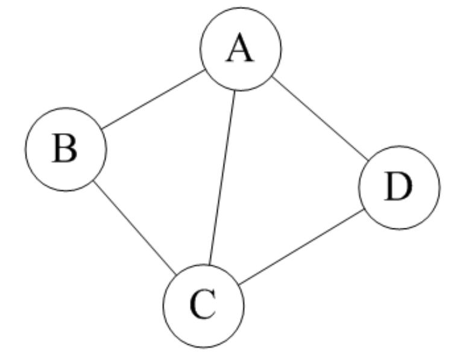
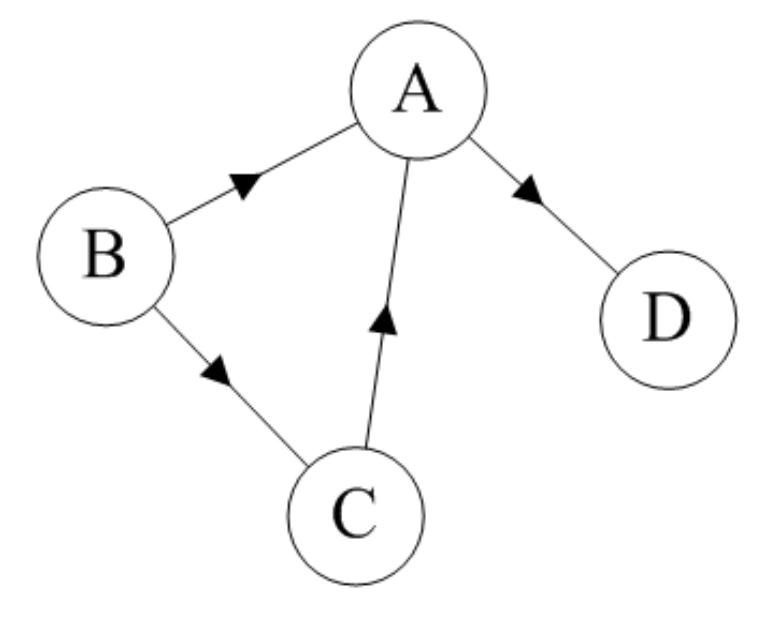
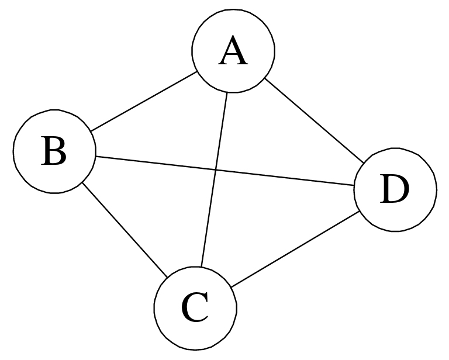
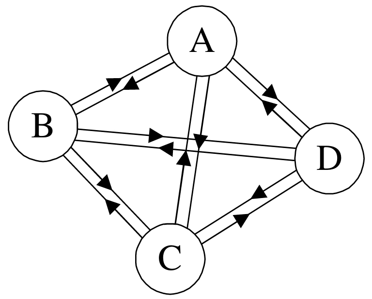
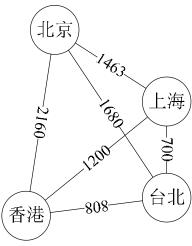
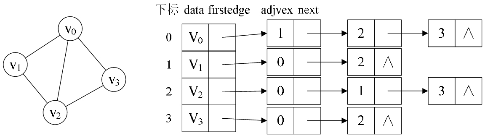
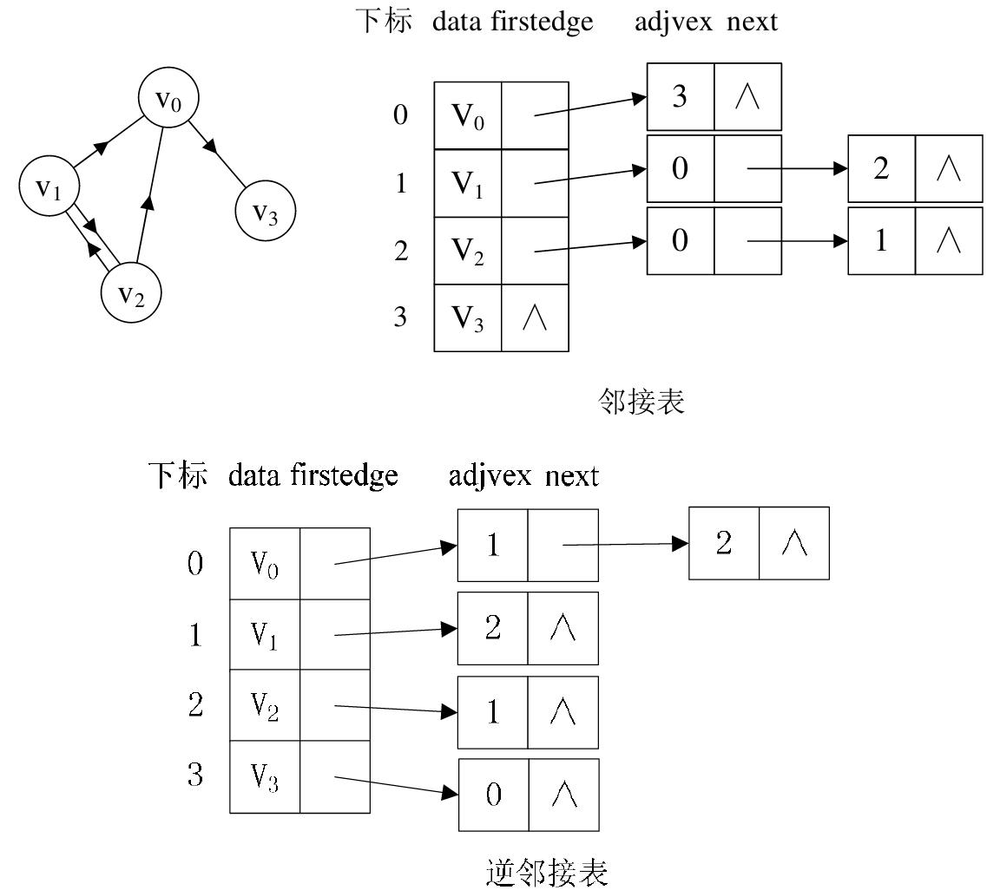
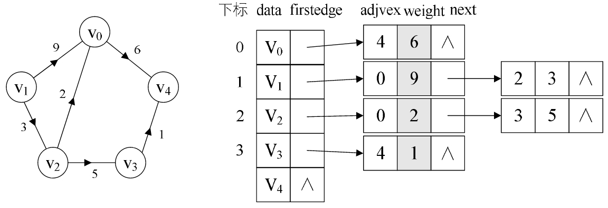

原文连接:https://www.cnblogs.com/linhaostudy/p/11829176.html
一 图的定义
定义：图（Graph）是由顶点的有穷非空集合和顶点之间边的集合组成，通常表示为：G(V,E)，其中，G表示一个图，V是图G中顶点的集合，E是图G中边的集合。
在图中需要注意的是：
（1）线性表中我们把数据元素叫元素，树中将数据元素叫结点，在图中数据元素，我们则称之为顶点（Vertex）。
（2）线性表可以没有元素，称为空表；树中可以没有节点，称为空树；但是，在图中不允许没有顶点（有穷非空性）。
（3）线性表中的各元素是线性关系，树中的各元素是层次关系，而图中各顶点的关系是用边来表示（边集可以为空）。
二 图的基本概念
（1）无向图

如果图中任意两个顶点之间的边都是无向边（简而言之就是没有方向的边），则称该图为无向图（Undirected graphs）。
（2）有向图

如果图中任意两个顶点之间的边都是有向边（简而言之就是有方向的边），则称该图为有向图（Directed graphs）。
（3）完全图
①无向完全图：在无向图中，如果任意两个顶点之间都存在边，则称该图为无向完全图。（含有n个顶点的无向完全图有(n×(n-1))/2条边）如下图所示：

②有向完全图：在有向图中，如果任意两个顶点之间都存在方向互为相反的两条弧，则称该图为有向完全图。（含有n个顶点的有向完全图有n×(n-1)条边）如下图所示：

PS：当一个图接近完全图时，则称它为稠密图（Dense Graph），而当一个图含有较少的边时，则称它为稀疏图（Spare Graph）。
（4）顶点的度
顶点Vi的度（Degree）是指在图中与Vi相关联的边的条数。对于有向图来说，有入度（In-degree）和出度（Out-degree）之分，有向图顶点的度等于该顶点的入度和出度之和。
（5）邻接
①若无向图中的两个顶点V1和V2存在一条边(V1,V2)，则称顶点V1和V2邻接（Adjacent）；
②若有向图中存在一条边<V3,V2>，则称顶点V3与顶点V2邻接，且是V3邻接到V2或V2邻接直V3；
PS：无向图中的边使用小括号“()”表示，而有向图中的边使用尖括号“<>”表示。
（6）路径
在无向图中，若从顶点Vi出发有一组边可到达顶点Vj，则称顶点Vi到顶点Vj的顶点序列为从顶点Vi到顶点Vj的路径（Path）。
（7）连通
若从Vi到Vj有路径可通，则称顶点Vi和顶点Vj是连通（Connected）的。
（8）权

有些图的边或弧具有与它相关的数字，这种与图的边或弧相关的数叫做权（Weight）。
三、图的存储结构
图的存储结构除了要存储图中的各个顶点本身的信息之外，还要存储顶点与顶点之间的关系，因此，图的结构也比较复杂。常用的图的存储结构有邻接矩阵和邻接表等。
3.1 邻接矩阵表示法
图的邻接矩阵（Adjacency Matrix）存储方式是用两个数组来表示图。一个一维数组存储图中顶点信息，一个二维数组（称为邻接矩阵）存储图中的边或弧的信息。

我们可以设置两个数组，顶点数组为vertex[4]={v0,v1,v2,v3}，边数组arc[4][4]为上图右边这样的一个矩阵。对于矩阵的主对角线的值，即arc[0][0]、arc[1][1]、arc[2][2]、arc[3][3]，全为0是因为不存在顶点的边。
不足：由于存在n个顶点的图需要n*n个数组元素进行存储，当图为稀疏图时，使用邻接矩阵存储方法将会出现大量0元素，这会造成极大的空间浪费。这时，可以考虑使用邻接表表示法来存储图中的数据。
3.2 邻接表表示法
首先，回忆我们在线性表时谈到，顺序存储结构就存在预先分配内存可能造成存储空间浪费的问题，于是引出了链式存储的结构。同样的，我们也可以考虑对边或弧使用链式存储的方式来避免空间浪费的问题。
邻接表由表头节点和表节点两部分组成，图中每个顶点均对应一个存储在数组中的表头节点。如果这个表头节点所对应的顶点存在邻接节点，则把邻接节点依次存放于表头节点所指向的单向链表中。
（1）无向图：下图所示的就是一个无向图的邻接表结构。

从上图中我们知道，顶点表的各个结点由data和firstedge两个域表示，data是数据域，存储顶点的信息，firstedge是指针域，指向边表的第一个结点，即此顶点的第一个邻接点。边表结点由adjvex和next两个域组成。adjvex是邻接点域，存储某顶点的邻接点在顶点表中的下标，next则存储指向边表中下一个结点的指针。例如：v1顶点与v0、v2互为邻接点，则在v1的边表中，adjvex分别为v0的0和v2的2。
PS：对于无向图来说，使用邻接表进行存储也会出现数据冗余的现象。例如上图中，顶点V0所指向的链表中存在一个指向顶点V3的同事，顶点V3所指向的链表中也会存在一个指向V0的顶点。
（2）有向图：若是有向图，邻接表结构是类似的，但要注意的是有向图由于有方向的。因此，有向图的邻接表分为出边表和入边表（又称逆邻接表），出边表的表节点存放的是从表头节点出发的有向边所指的尾节点；入边表的表节点存放的则是指向表头节点的某个顶点，如下图所示。

（3）带权图：对于带权值的网图，可以在边表结点定义中再增加一个weight的数据域，存储权值信息即可，如下图所示。
